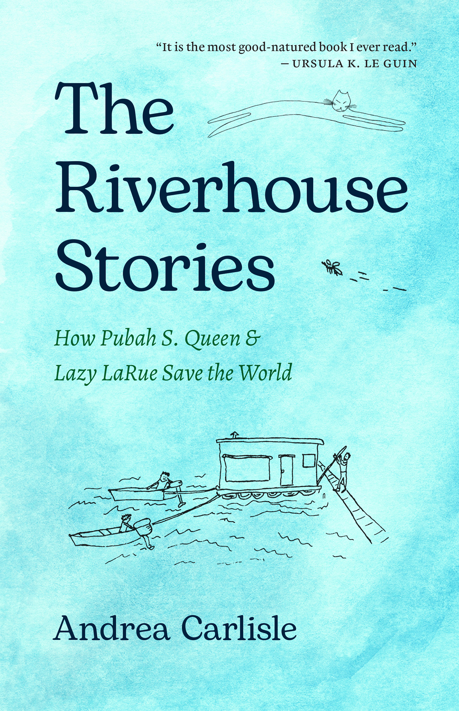

The Riverhouse Stories by Andrea Carlisle is a collection of interconnected short stories centered on Pubah S. Queen and Lazy LaRue, who make their home together on a ramshackle houseboat along the Willamette River in Portland, Oregon. Lazy LaRue, a writer, and Pubah, an apprentice electrician, navigate a world where the everyday and the extraordinary intertwine. Though their floating home is old, unstable, and in constant need of repair, their love for the river, their neighbors, and each other remains steadfast. Whether lassoing drifting logs, rewiring their home, dreaming up inventive creations, or taking to the skies in a hot air balloon, they discover wonder in both the practical and the fantastical. The Riverhouse Stories was originally published in 1986 by CALYX Books, with several of the short stories from the book first appearing in CALYX’s literary journal. A 40th-anniversary edition was published by Oregon State University Press in 2026, and includes a new afterword by Carlisle reflecting on the four decades since the book’s original publication.
The Riverhouse Stories is a tale where Oregon, and more specifically Portland, serves as a loadbearing column in the careful construction of the magically mundane world that LaRue and Pubah inhabit. There is an incredibly specific sense of place embedded throughout each chapter that makes Oregon feel integral, in such a way that the concept of Oregon could not be extracted without losing some of what makes this story powerful and easy to connect with. The Willamette River is a constant undercurrent, both physically and structurally, the unwaveringly kind but often reclusive neighbors that form LaRue and Pubah’s little houseboat community feel like a wonderful distillation of Portland itself, and the emotional climax of the book is one where the moment that LaRue begins to find her place in the world—as a writer, as a queer woman, and as a person—is quite literally framed against the backdrop of Oregon as she travels in a fanciful hot air balloon ride from the Willamette River out to the coast and beyond. This book also defies genre conventions. Constructed from elements of Carlisle's own life and experiences, it artfully refuses to become simply memoir. Each chapter functions as its own delightful story while contributing to a larger narrative thread, and moments that might be described as magical realism somehow make Pubah and LaRue's enchanting little houseboat world feel more real, not less.
The Riverhouse Stories may not comment upon Oregon in the way some other texts included in this guide do, but instead tells a story that could, in many ways, only be told in Oregon—from a houseboat along the Willamette River in Portland. It is important to remember the context in which the book was first published. According to Carlisle, there were only around 200 works of fiction focused on romantic relationships between two women when she decided to publish The Riverhouse Stories, and works that spoke simply to the happiness and joy of such relationships were rare. In an interview conducted before the publication of the fortieth-anniversary edition, Carlisle reflected that the “saving the world” aspect represented by the book's subtitle came more from its original publisher than from her. She notes that “the subtitle implies a conscious determination on the characters’ part to accomplish change in the world, and few, if any, of the little events that occur within those pages reflect such determination,” and that Pubah and LaRue are not trying to “save the world” any more than anyone else who lives in it. Rather than downplaying the impact of the book, Carlisle's observation illuminates its true power. The Riverhouse Stories allows Pubah and LaRue to live happily, creatively, and together; there is a quiet magic in the way these two women love, play, and build a life within their odd little community. In the context of defining Oregon literature, stories like The Riverhouse Stories are important because they demonstrate that Oregon literature is not confined to works explicitly about the state, but also includes stories deeply rooted in a particular place—even one as small as a single houseboat—and in the lived experiences of the people who inhabit it.
Additionally, the story of how this book came into being is tightly entwined with Oregon’s literary scene: this particular story was only able to find its way into print during the 1980s due to the work of CALYX, the feminist literary journal based in Corvallis that worked with Carlisle to turn the dozen-or-so stories that had already been published in their journal into the 1986 edition of The Riverhouse Stories. From CALYX, the book went to Eighth Mountain Press—another small independent press that was based in Portland—for some time. Now, forty years later, this book is being given new life and brought to a new generation of readers by Oregon State University Press, which has been a key contributor to Oregon literature for well over sixty years and is currently the state’s only university press. Through this history, The Riverhouse Stories serves as a testament to the powerful role of Oregon publishers in giving life to regional stories and voices, and speaks more specifically to the hard work being done by publishers right here in Corvallis.
Andrea Carlisle is an author and editor who has lived in a houseboat along the Willamette River in Portland, Oregon, for the past four decades. She was born in North Dakota and grew up in the Midwest.
Andrea Carlisle, There Was an Old Woman: Reflections on These Strange, Surprising, Shining Years (2023)
Andrea Carlisle, A River Runs Under It: 40 Years on a Houseboat in Oregon (2020)
